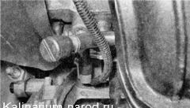
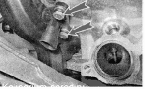

Датчик положения распределительыого вала - снятие, проверка и установкаДля выполнения работы потребуется: мультиметр (в режиме вольтметра). Снятие и проверка 1. Подготавливаем автомобиль к выполнению работы 2. Снимаем декоративную накладку двигателя 3. Освободив фиксатор, отсоединяем колодку проводов от датчика положения распределительного вала. 4. Подсоединяем «минусовой» щуп вольтметра к «массе» (к кузову автомобиля). 5. Включив зажигание, вольтметром измеряем напряжение питания на выводе А колодки жгута проводов (обозначения выводов выполнены на колодке). Напряжение на выводе должно быть не меньше 12 В. Если напряжение не поступает на колодку или оно меньше 12 В, значит, разряжена аккумуляторная батарея, неисправна цепь питания или неисправен ЭБУ. 6. Снимаем впускной модуль. 7. Торцовым ключом на 10 мм отворачиваем два болта крепления датчика положения распределительного вала. 8. Извлекаем датчик положения распределительного вала из отверстия задней крышки ремня привода ГРМ. Совет Убедиться в неисправности датчика положения распределительного вала можно, заменив его заведомо исправным. Установка Устанавливаем датчик положения распределительного вяля в последовательности, обратной снятию. |